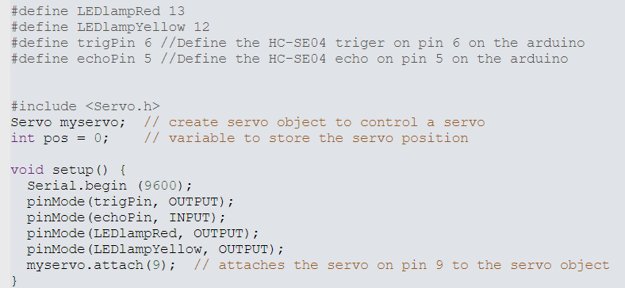
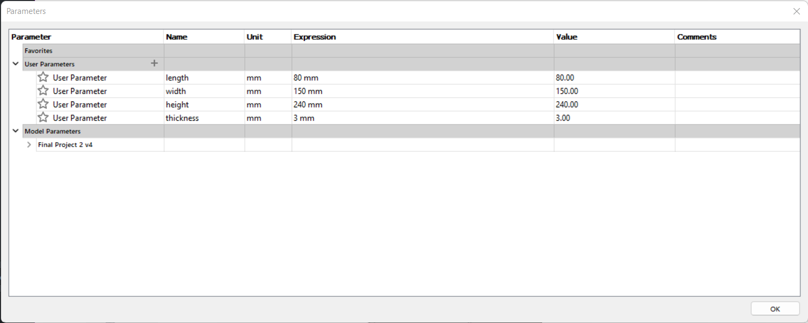
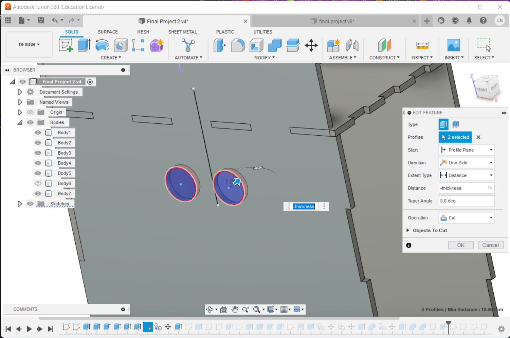
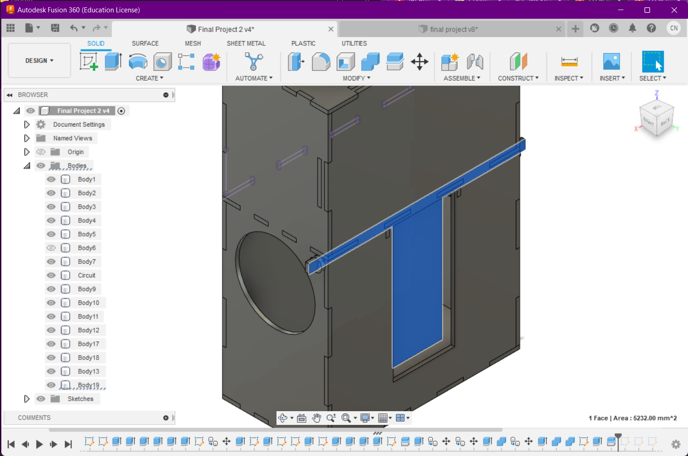

Automatic disinfection door handle.
A device that sprays disinfection solution to a door handle after it has been used to prevent the pread of diseases.
Here is the design in Fusion 360.
Planning stage
To begin, I made a rough sketch:
Then I made a cardboard prototype:
I then figured out the components for the circuit
Here is the tinkercad simulation:
Here is my Bill of Materials:
Coding Steps:
Get the right components
To start off, in tinkercad, select:
- An arduino board
- A breadboard
- An ultrasonic proximity sensor
- A servo motor
- 2 LED lights
- 2 220Ohm resistors
Set up the connections
Connect the breadboard to the arduino board by connecting the 5V pin and GND pin to the live and ground of the breadboard,respectively.
Place the LEDs on the breadboard side by side and connect a resistor to the negative side of each LED.
Connect the live and ground side of the sensor and servo to the positive and negative of the breadboard respoectively.
Connect the positive side of the LEDs, trigpin, echopin and servo to pins 12, 13, 6, 5 and 9 respectively.
Code!
Firstly, define LEDs, Sensor pins and servo. Then, in voidsetup make the pins all of these pins outputs.
Next for the voidloop, write the code to measure distance using the ultrasonic sensor.
Use the If...else command to make the servo sweep when there distance measured is less than 25cm.
This will result in the servo making a sweep and pressing the spray bottle if a person uses the door handle, dininfecting it.
Here is the code:
Design Steps:
I started with the box design that I used for the music box design.
The parameters used are:
Inner wall
I wanted to add an inner wall to separate the arduino board from the rest of the components. The section will also contain the battery and is where the servo will be located.
Move the bottom side into the box.
Select the side of this new component and cut, making sure the new inner wall is hidden.
Bottle
Select one of the sides and draw a circle the size of the largest diameter of the bottle.
Extrude
To make the bottle holder, use the size of the spray bottle to make a rectangle and cut out a rectangle off center from the rectangle to make space for the sweeper that will press the spray bottle. The sweeper needs to be the diameter required to press down on the spray mechanism. Extrude the sweeper making sure that there is enough room for it to move and room for the servo to be placed.
It should look like this:
I also added a basket for the battery.
Proximity sensor
The proximity sesor needs two holes to detect the person.
The first step draw two circles.

Cut out these circles on the front side.
Loading bottles
I decided to do a door for replacing the bottle.
Draw out the door and the hole.
Cut out circles on the sides
Extrude the door
Save dxf files
Select sides and create sketches from them. To save these are dxf files, select each sketch and right click them and click "save as dxf". All of the walls are to be laser cut.
Save stl files
To do this, right click the Document settings and click "save as mesh". Make sure that the file type is stl and only the bodies you do not want to print are hidden. Repeat this process to get the stl file for the bottle holder and battery holder separately.
Fabrication Steps:
Laser Cut
Send these dxf files to the laser cutter.
Print!
After printing, the pieces should have supports, use cutters to remove them


Put it together
Hot glue the 3D printed materials in place and assemble the box. Place the components into the container.

Here is the Presentation slide
Tip
Write a checklist to keep track of all of the different parts, especially when laser cutting to ensure all of the parts get cut.